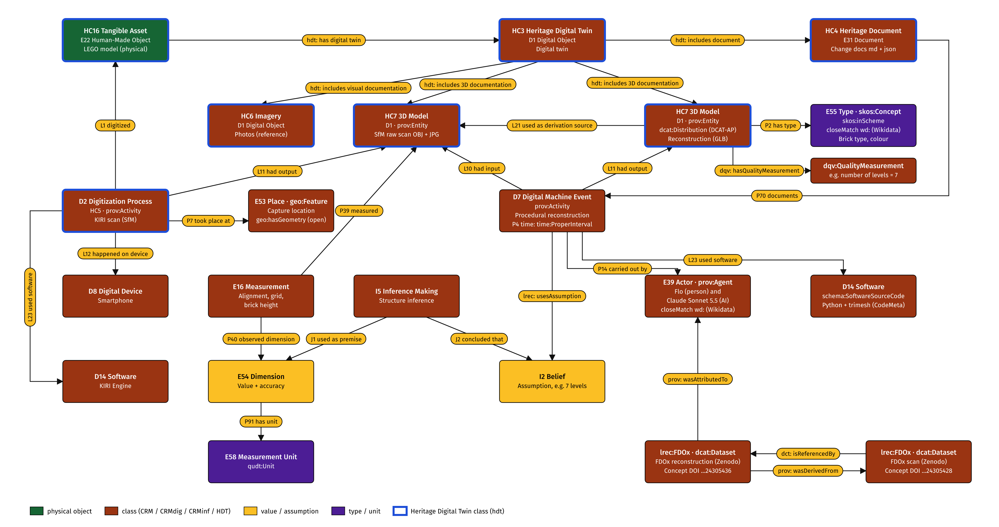

Figures

F1Whole model: scan, reconstruction, interpretation, FDOx packages
Shown for pyramid 2. Pyramid 1 is analogous (FDOx concept DOIs 10.5281/zenodo.24305240 for the scan and 10.5281/zenodo.24305343 for the reconstruction). Noted inside the classes without a node of their own: DCAT-AP, CodeMeta, SKOS, Wikidata (closeMatch), OWL-Time (P4); every class is also a prov:Entity, prov:Activity or prov:Agent (subclass relation, not drawn). Generated by py/figures from ontology/lrec.ttl. PNG · SVG